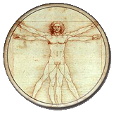
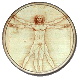

Zona
Zdravlja
STA JE ZDRAV ZIVOT?
 Hrana izgrađuje, održava i osnažuje naše fizičko telo. Međutim, utisci koje čulima stičemo iz naše okoline, a takođe i iz našeg unutrašnjeg sveta - naše misli i osećanja - predstavljaju takođe svojevrsnu hranu, zahvaljujući kojoj se razvija naše unutrašnje, odnosno duhovno biće. I ova, takozvana suptilna hrana, može biti prirodna ili neprirodna, zdrava hrana ili nezdrava hrana. Bili mi toga svesni ili ne, naš organizam i celo naše biće ima usađenu težnju da se hrani zdravo - na spoljašnjem fizičkom i unutrašnjem duhovnom nivou. Te suptilne nagoveštaje koji dopiru iz unutrašnjosti našeg bića godinama možemo nesvesno da prenebregavamo, ili čak da ih namerno ignorišemo. Ali, tada ćemo se suočiti sa posledicom narušavanja prirodnog zakona, koja se ispoljava kroz opšte nezadovoljstvo, osećaj frustracije, bolest i prevremeno starenje i propadanje organizma.
Hrana kojom se napajaju naša spoljašnja čula, veoma je važna i treba izabrati prostor i okruženje koje će nam omogućiti prirodno življenje. Gradska vreva i gužva naseljenih mesta predstavlja, zapravo, neprirodno boravište. Svež vazduh, vibracija nezagađene prirodne okoline, planine i predeli blizu mora, jezera ili reka, mesta gde postoji mnogo parkova, prostranih polja, gde vlada mir i tišina, predstavljaju idealno boravište za čoveka.
Ukoliko upražnjavamo sport i fizičke aktivnosti, telo će nam prirodno zahtevati unošenje visokoenergetske hrane i pravilan izbor namirnica. Pravilna i zdrava ishrana podrazumeva da je u svoj način života neophodno uvrstiti najmanje 20 minuta fizičkih aktivnosti dnevno (gimnastika, trčanje, vožnja bicikla, hata joga, planinarenje, brza šetnja) i što više boraviti na svežem vazduhu, aktivno se odmarati i relaksirati. Naše ljudsko okruženje bitno utiče na celokupno naše življenje, pa je neophodno orijentisati se na izbor društva koje deluje harmonično, koje nam nudi mir, budi u nama osećaj mira i razvija našu prirodnu ljubav prema svetu i ljudima - a to su elementi koji su zdrava ishrana za naše duhovno biće. Zato je prisustvo duhovnih, prosvetljenih ljudi u jednoj društvenoj zajednici od izuzetnog značaja za duhovno zdravlje i materijalni razvoj čoveka.
Izbor umetnosti, lepote, harmonije i mira kao trajne životne orijentacije, kako pojedinca, tako i društva u celini, omogućava razvoj čovekovog unutrašnjeg bogatstva i vodi ka tome da savršeno zdravlje i produženje životnog veka postanu realnost.
Lični izbor u smislu moralnosti življenja, življenja u skladu sa istinom, ima velikog uticaja na duhovno stanje pojedinca, koje uslovljava i opšte zdravstveno stanje. Nepovređivanje drugih, istinoljubivost, poštenje i odsustvo pohlepe, spoljašnja i unutrašnja čistota, (čistota tela i uma), osećaj zahvalnosti i zadovoljstva onim što smo dobili od života, u stanju je da nas učini da postanemo istinski zdravo biće.
Bavljenje duhovnim životom i rasterećenje od dogmi i predrasuda širi naše vidike, povećava toleranciju i poboljšava komunikaciju sa okolinom. Svest da smo mi ti koji biramo i odlučujemo u kakvim okolnostima živimo i naše neprekidno opredeljenje za pozitivno, određuje i naše okruženje, uslove u kojima radimo i u najširem smislu moralni, socijalni i politički okvir u kome obitavamo.
Zapravo, koren svih bolesti leži u psihičkom stanju pojedinca, u njegovoj izloženosti stresnim situacijama koje izaziva uzimanje duhovno nezdrave hrane. Najvažnije je imati svest da mi to možemo promeniti i da od nas, samo od nas, zavisi sve što nas okružuje.
Odstranjivanje svih negativnih misli i osećanja iz našeg sistema (laž, mržnja, zavist, pakost, podlost, dvoličnost, strah, depresija), koji su ustvari nezdrava hrana za naš duh, i svesno razvijanje plemenitih misli i osobina, kao što su nesebičnost, služenje drugim ljudima, dobrodušnost, spokojstvo, hrabrost, radost i dobro raspoloženje – koji su ustvari zdrava hrana za naš duh, mogu postati istinski ključ celokupnog našeg zdravlja i radost življenja.
Pokušajte da uz punu svest i veru, zdrava ishrana postane vaša svakodnevnica i princip zdravog života u celini. Promenite svoje navike i unesete novinu u svoje življenje. Bićete iznenađeni koliko radosti, spontanosti i zadovoljstva može doneti poklanjanje pažnje sopstvenom biću, kako na fizičkom, tako i na duhovnom, psihološkom i mentalnom nivou.
 Hrana izgrađuje, održava i osnažuje naše fizičko telo. Međutim, utisci koje čulima stičemo iz naše okoline, a takođe i iz našeg unutrašnjeg sveta - naše misli i osećanja - predstavljaju takođe svojevrsnu hranu, zahvaljujući kojoj se razvija naše unutrašnje, odnosno duhovno biće. I ova, takozvana suptilna hrana, može biti prirodna ili neprirodna, zdrava hrana ili nezdrava hrana. Bili mi toga svesni ili ne, naš organizam i celo naše biće ima usađenu težnju da se hrani zdravo - na spoljašnjem fizičkom i unutrašnjem duhovnom nivou. Te suptilne nagoveštaje koji dopiru iz unutrašnjosti našeg bića godinama možemo nesvesno da prenebregavamo, ili čak da ih namerno ignorišemo. Ali, tada ćemo se suočiti sa posledicom narušavanja prirodnog zakona, koja se ispoljava kroz opšte nezadovoljstvo, osećaj frustracije, bolest i prevremeno starenje i propadanje organizma.
Hrana kojom se napajaju naša spoljašnja čula, veoma je važna i treba izabrati prostor i okruženje koje će nam omogućiti prirodno življenje. Gradska vreva i gužva naseljenih mesta predstavlja, zapravo, neprirodno boravište. Svež vazduh, vibracija nezagađene prirodne okoline, planine i predeli blizu mora, jezera ili reka, mesta gde postoji mnogo parkova, prostranih polja, gde vlada mir i tišina, predstavljaju idealno boravište za čoveka.
Ukoliko upražnjavamo sport i fizičke aktivnosti, telo će nam prirodno zahtevati unošenje visokoenergetske hrane i pravilan izbor namirnica. Pravilna i zdrava ishrana podrazumeva da je u svoj način života neophodno uvrstiti najmanje 20 minuta fizičkih aktivnosti dnevno (gimnastika, trčanje, vožnja bicikla, hata joga, planinarenje, brza šetnja) i što više boraviti na svežem vazduhu, aktivno se odmarati i relaksirati. Naše ljudsko okruženje bitno utiče na celokupno naše življenje, pa je neophodno orijentisati se na izbor društva koje deluje harmonično, koje nam nudi mir, budi u nama osećaj mira i razvija našu prirodnu ljubav prema svetu i ljudima - a to su elementi koji su zdrava ishrana za naše duhovno biće. Zato je prisustvo duhovnih, prosvetljenih ljudi u jednoj društvenoj zajednici od izuzetnog značaja za duhovno zdravlje i materijalni razvoj čoveka.
Izbor umetnosti, lepote, harmonije i mira kao trajne životne orijentacije, kako pojedinca, tako i društva u celini, omogućava razvoj čovekovog unutrašnjeg bogatstva i vodi ka tome da savršeno zdravlje i produženje životnog veka postanu realnost.
Lični izbor u smislu moralnosti življenja, življenja u skladu sa istinom, ima velikog uticaja na duhovno stanje pojedinca, koje uslovljava i opšte zdravstveno stanje. Nepovređivanje drugih, istinoljubivost, poštenje i odsustvo pohlepe, spoljašnja i unutrašnja čistota, (čistota tela i uma), osećaj zahvalnosti i zadovoljstva onim što smo dobili od života, u stanju je da nas učini da postanemo istinski zdravo biće.
Bavljenje duhovnim životom i rasterećenje od dogmi i predrasuda širi naše vidike, povećava toleranciju i poboljšava komunikaciju sa okolinom. Svest da smo mi ti koji biramo i odlučujemo u kakvim okolnostima živimo i naše neprekidno opredeljenje za pozitivno, određuje i naše okruženje, uslove u kojima radimo i u najširem smislu moralni, socijalni i politički okvir u kome obitavamo.
Zapravo, koren svih bolesti leži u psihičkom stanju pojedinca, u njegovoj izloženosti stresnim situacijama koje izaziva uzimanje duhovno nezdrave hrane. Najvažnije je imati svest da mi to možemo promeniti i da od nas, samo od nas, zavisi sve što nas okružuje.
Odstranjivanje svih negativnih misli i osećanja iz našeg sistema (laž, mržnja, zavist, pakost, podlost, dvoličnost, strah, depresija), koji su ustvari nezdrava hrana za naš duh, i svesno razvijanje plemenitih misli i osobina, kao što su nesebičnost, služenje drugim ljudima, dobrodušnost, spokojstvo, hrabrost, radost i dobro raspoloženje – koji su ustvari zdrava hrana za naš duh, mogu postati istinski ključ celokupnog našeg zdravlja i radost življenja.
Pokušajte da uz punu svest i veru, zdrava ishrana postane vaša svakodnevnica i princip zdravog života u celini. Promenite svoje navike i unesete novinu u svoje življenje. Bićete iznenađeni koliko radosti, spontanosti i zadovoljstva može doneti poklanjanje pažnje sopstvenom biću, kako na fizičkom, tako i na duhovnom, psihološkom i mentalnom nivou.